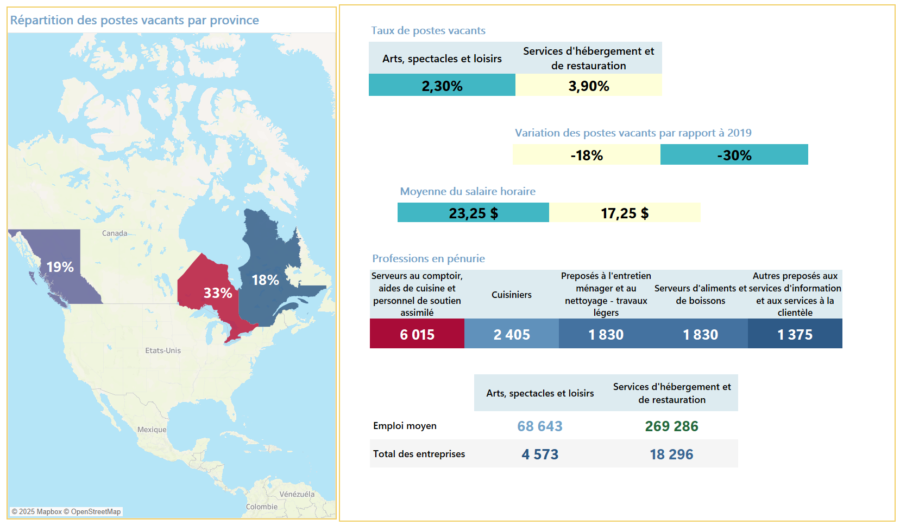

Avec une solide expertise en analyse de données, je combine une approche méthodique avec des outils avancés pour transformer des ensembles de données complexes en informations stratégiques exploitables. Ma maîtrise de SQL me permet de structurer et d'interroger efficacement les bases de données pour extraire des insights précis, tandis que Python me permet de manipuler et d'analyser des données massives grâce à des bibliothèques comme Pandas. En complément, j'utilise Excel pour des analyses rapides et la création de modèles personnalisés. Ces compétences me permettent de mener des analyses approfondies tout en optimisant la performance des données, en me concentrant sur les perspectives et le futur.

La création de visualisations percutantes et de rapports analytiques est au cœur de mes compétences. Grâce à des outils comme Tableau, Power BI et les bibliothèques Python, je transforme des données brutes en récits visuels clairs et convaincants. Ma capacité à concevoir des graphiques adaptés aux objectifs stratégiques et à répondre aux besoins spécifiques des entreprises permet de renforcer le "storytelling" (ou narration visuelle) et d'optimiser la prise de décision. Je conçois des tableaux de bord interactifs dynamiques qui facilitent l'exploration des données et mettent en lumière des insights clés, qu'il s'agisse de KPI ou de données complexes issues de grandes volumétries.
Fort d'une rigueur méthodologique et d'une expertise dans les recherches qualitative et quantitative, je mets à profit mes connaissances en sciences sociales et en études touristiques pour fournir des analyses détaillées sur des sujets variés, tels que le marché du travail ou les tendances économiques. Mon expérience en rédaction académique, stratégique et promotionnelle me permet de produire des rapports clairs, argumentés et adaptés à différents types de publics, qu'il s'agisse de chercheurs, d'entreprises ou de décideurs politiques. Ma capacité à synthétiser des informations complexes et à les vulgariser est un atout majeur dans mes travaux de recherche et de rédaction.

Je vous accompagne dans le développement et la documentation de processus de travail adaptés à vos besoins stratégiques. Grâce à mon expertise en gestion de projets et en analyse de données, je mets en place des processus optimisés et documentés pour assurer une exécution fluide et efficace. Je rédige des fiches de projet détaillées, soutiens la préparation de demandes de financement en appuyant les arguments avec des données pertinentes et des analyses approfondies, et génère des études de valeur et des opportunités pour maximiser les résultats. En outre, je crée des guides méthodologiques et des manuels de processus pour faciliter la mise en œuvre des projets et assurer leur succès à long terme. Mon approche méthodologique garantit une clarté optimale et une efficacité accrue, tout en assurant un alignement parfait avec vos objectifs d'affaires et les besoins spécifiques de vos projets.
En tant que consultant, mon approche repose sur l'analyse approfondie des données pour fournir des recommandations stratégiques éclairées. Fort d'une expérience en gestion et coordination de projets, ainsi qu'en management d'équipe, j'apporte une vision claire et orientée résultats. Mon expertise en gestion de projets et en expérience client m'a permis de développer une forte capacité à résoudre des problématiques complexes dans des environnements diversifiés. Passionné par la donnée, je m'efforce d'aider les organisations à tirer le meilleur parti de leurs ressources grâce à des solutions innovantes et centrées sur l'humain, tout en plaçant le succès organisationnel au cœur de ma démarche.